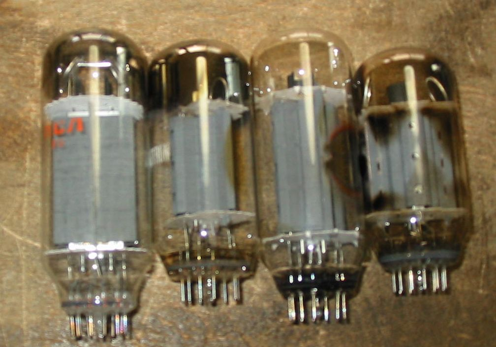
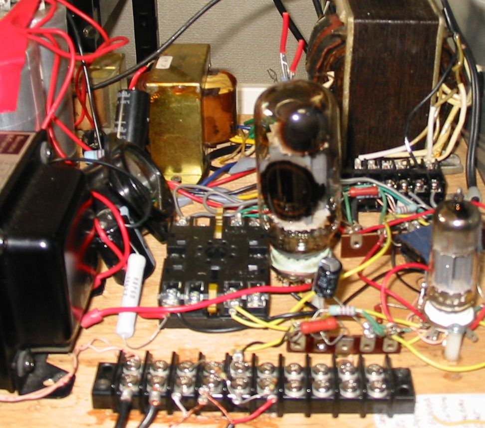

パルスタイプ高圧レギュレータ管6HV5 、6HV5A、6JH5、6HS5をオーディオで使ってみます。
左から6JH5、6HS5、6HV5A、6HV5 これらの球はTVのパルスレギュレータ用で内部抵抗が高くアンプ用には
向いていないといわれています。
誰もこんな球をオーディオに使ってみようなどとはしないだろうと思っていましたが、世界は広いものでアメリカのある板に
やっているという人が現れました。6HV5Aの場合μが300でPpは35W、Ep=600V、A2ドライブでRL=10KΩ、8Wくらいの出力が
得られるそうです。音質は？自分でやってみたら…
送信管の811Aの増幅率ミューが160ですから、ちょっとがんばればできるかもしれません。

6HV5 SGドライブアンプの試作
ちょっとがんばればできるかもしれませんと書いたので、自分でやってみました。土台は6CD6のSGドライブアンプです。
6CD6と同じ設定でIk=40mAです。ちなみに6CD6GAで70mAくらいになります。音は811と同じような感じで、悪くありません。
＋Bは420V位で、この球の能力をフルに使うには500V以上必要と思います。OPTはTANGOのU-808なので、
負荷インピーダンスは最大の5kΩです。
ドライバは12BH7Aのカソードフォロアで、Ep380V、Ip５ｍA、6HV5はBeam Plate+160V、EG+15V、カソードバイアス+16V位です。
*SGドライブと言っているのですが、この球にはSGは無いので、ビーム形成電極をSGに見立てて、ドライバのカソードフォロア
に接続し、グリッドにはその電圧を抵抗で分圧して加えています。

2010/10/08
パルスタイプ高圧レギュレータ管6HV5 、6HV5Aのビーム形成電極(BFP)。
この球は3極管ということになっていますが、実際にはビーム形成電極（BFP）があり4極管です。このBFPは球からはカソードとは
独立して引き出されており、通常は外部でカソードに接続して使うようになっています。BFPはグリッドではなく箱形の枠なので、
制御能力はほとんどありません。しかしゼロではありません。実験してみると300Vの電圧変化に対し、約10mAのIkの変化
があります。30μmho のGmになります。ちなみにG1をアースしてBFPだけドライブしてみるとかすかに音が出ます。
結論としては、BFPをカソードに接続するより、あたかもスクリーングリッドのようにドライブした方が出力が増えるという
ことになります。今回の実験はここまでとしておきます。（2010/10/14）
back to top
back to home page